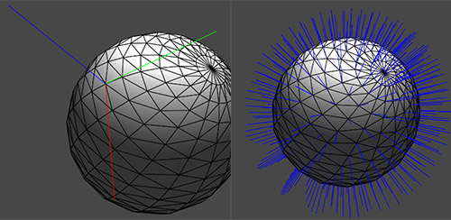

显示切线空间
2016-4-16
有些情况下我想要把模型的切线空间显示出来，法线、切线、付切线、或者三者都显示。这样做主要是为了调试用，因为有的模型光照效果总是有问题，检查了 Shader 的计算后没有任何问题，最后定位到是模型本身的法线有问题，所以最快捷的方法就是直接在 Unity 中把法线显示出来。这样立即就能看到问题的所在了。

下面是关键的代码
Vector3[] vertices = mesh.vertices;
Matrix4x4 l2w = meshFilter.transform.localToWorldMatrix;
Matrix4x4 l2w_v = l2w.inverse.transpose;
DrawVectors(vertices, ref l2w, ref l2w_v, mesh.normals, Color.blue);
private void DrawVectors(Vector3[] vertices, ref Matrix4x4 l2w, ref Matrix4x4 l2w_v, Vector3[] vectors, Color color)
{
Gizmos.color = color;
int numVectors = vectors == null ? 0 : vectors.Length;
for(int i = 0; i < numVectors; ++i)
{
Vector3 vector = vectors[i];
Vector3 vertex = vertices[i];
vertex = l2w.MultiplyPoint(vertex);
vector = l2w_v.MultiplyVector(vector);
vector.Normalize();
Gizmos.DrawLine(vertex, vertex + vector * sizeTBN);
}
}
值得注意的是 l2w_v，为了在模型非统一缩放时也能正确显示，所以要这样使用，具体原因看这里。显示切线和付切线也是调用的 DrawVectors 函数，只是在调用前需要做点预处理。
// 显示切线
Vector4[] tangents = mesh.tangents;
int numTangents = tangents == null ? 0 : tangents.Length;
if(numTangents > 0)
{
Vector3[] newTangents = new Vector3[numTangents];
for(int i = 0; i < numTangents; ++i)
{
Vector4 tangent = tangents[i];
newTangents[i].x = tangent.x;
newTangents[i].y = tangent.y;
newTangents[i].z = tangent.z;
}
DrawVectors(vertices, ref l2w, ref l2w, newTangents, Color.red);
}
// 显示付切线
Vector3[] normals = mesh.normals;
Vector4[] tangents = mesh.tangents;
int numTangents = tangents == null ? 0 : tangents.Length;
if(numTangents > 0)
{
Vector3[] binTangents = new Vector3[numTangents];
for(int i = 0; i < numTangents; ++i)
{
// 付切线是通过法线和切线计算得来的
binTangents[i] = Vector3.Cross(normals[i], new Vector3(tangents[i].x, tangents[i].y, tangents[i].z)) * tangents[i].w;
}
DrawVectors(vertices, ref l2w, ref l2w, binTangents, Color.green);
}
请注意上面代码调用 DrawVectors 传递的参数，原本应该传 l2w_v 的地方却传了 l2w，这是因为切线和付切线不会受非统一缩放的影响。